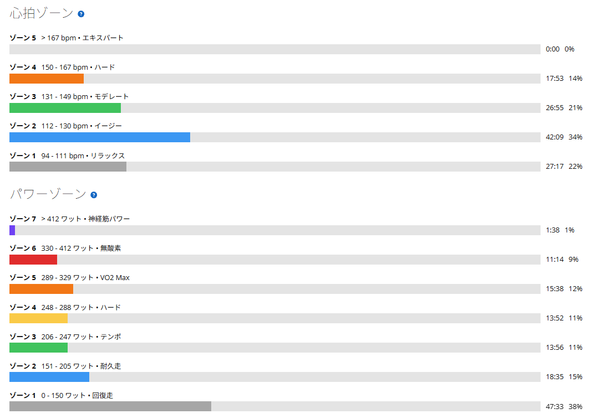
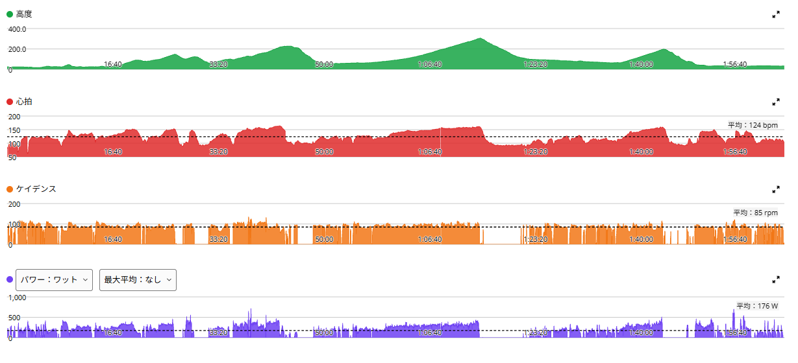

同じ太平山反時計回りを、今日は「回す」意識で走る
今日は前日に続いて、もう一度「太平山反時計回り」を走ってきた。昨日は脚がかなり軽く、太平山321W、琴平峠309W、唐沢山331Wと、全体的に高い出力で走れた。TSSも165.6で、しっかりしたON日である。
なので今日は、同じコースを走りつつ、昨日ほどは追わず、全体の強度を少しだけ落とす意識で走った。それに加えて、もうひとつテーマを決めていた。昨日のように重いギアを踏むのではなく、少し軽めのギアで「回す」感覚で走ることである。

51.51km・NP243W・TSS158.8
- 全体51.51km / 2時間02分34秒 / 獲得801m / 平均気温23.7℃
- 負荷平均176W / NP243W / IF0.883 / TSS158.8
- 心拍・回転平均124bpm / 最大164bpm / 平均85rpm
- 効果有酸素TE4.0 / 無酸素TE0.8 / 運動負荷203
- 前日（10月8日）NP248W / IF0.902 / TSS165.6 / 平均84rpm
昨日より一段抑えたとはいえ、TSSは158.8。軽い日ではない。回復走ではなく、連続ONの2日目に出力を一段抑えて、回転を意識した日である。

6つの登りすべてで、ケイデンスが上がった
- 名もなき峠2分04秒8・327W・83rpm（昨日 2分07秒7・323W・73rpm）
- 下皆川街道2分21秒6・319W・86rpm（昨日 2分08秒1・350W・83rpm）
- 登り返し52秒7・376W・96rpm（昨日 52秒9・394W・87rpm）
- 太平山7分15秒7・312W・95rpm（昨日 6分57秒1・321W・90rpm）
- 琴平峠14分45秒・297W・93rpm（昨日 14分18秒・309W・88rpm）
- 唐沢山6分12秒5・305W・86rpm（昨日 5分48秒5・331W・81rpm）
全体の平均ケイデンスは84rpmから85rpmで、数字だけ見ると1rpmしか変わっていない。でも下りや移動区間も含まれるので、登りだけを見ると違いは明確である。6つの登りすべてで、今日の方が3〜10rpm高い。昨日は重いギアでトルクをかけて踏む、今日は少し軽いギアで回転を使う。狙っていた違いが、そのままデータに出た。
長い登り3本は、出力を落として18〜27秒遅かった
太平山は出力を9W落としてタイムは18秒遅く、ケイデンスは5rpm上がった。同じ太平山でも、かなり違う登り方になった。琴平峠も出力を12W落とし、15分弱の登りをほぼ300Wで走りながら、昨日より回転数を高く保てている。長い登りで「回して進む」練習としては、分かりやすい数字である。唐沢山は、昨日は最後まで脚が残っていて331Wまで上げたが、今日はそこまで追わず305Wでまとめた。

短い区間は、回してもあまり落ちなかった
短い区間は様子が少し違った。名もなき峠は、今日の方がパワーも高くタイムも速い。出力まで昨日を上回ったのは、6区間でここだけである。最初から「踏む」より「回す」意識だったのに、ここでは数字が落ちていない。登り返しも出力は18W低いが、タイムは52秒7と52秒9で、わずかに今日の方が速かった。
一方で下皆川街道は、出力を31W下げてタイムは13秒半遅い。ここは「全部の登りで頑張らない」「重いギアで押し切らない」という今日の走り方が、そのまま出た区間である。
ただ「回したから楽になった」とは、まだ言えない
- 太平山心拍平均149bpm・最大164bpm（昨日 151bpm・170bpm）
- 琴平峠心拍平均149bpm・最大162bpm（昨日 153bpm）
- 唐沢山心拍平均145bpm・最大160bpm（昨日 150bpm）
長い登りでは心拍も少し下がっている。ただ、今日は回転を上げると同時に、出力も一段落としている。どちらの効果なのかは、今日のデータだけでは分からない。
踏む日と回す日、富士ヒルでは両方いる
短い登りや急勾配では、トルクをかけて踏む力が必要になる。一方で長い登りでは、回転を使って脚への負担を分散しながら走る能力も必要である。
富士ヒルのような長い登りを考えても、どちらか一方に固定するのではなく、その日の調子や勾配、残り時間に合わせて切り替えられる方が強いはずだ。
明日は久しぶりにローラーへ
明日は久しぶりにローラーをやる予定である。候補は250W前後×20分×3本、レスト5分。最近は外で高い出力を自然に出すことが多かったので、明日は逆に、ケイデンスを決めたうえで、一定出力、一定ペース、フォーム、心拍の安定を意識して走る。しっかり練習するけど、追い込みすぎないくらいの強度になりそうだ。
今日やってみて思ったこと
昨日と今日で、同じコースなのに登り方はかなり違った。どちらが正解というより、両方できることが大事なんだと思う。以前なら「今日は何W出たか」ばかり気にしていたが、最近は、どういうギアで、どのくらいのケイデンスで、どんな感覚で登ったかも見るようになってきた。同じ300Wでも、踏み方が違えば脚の使い方も変わる。今後はこの違いも利用しながら、長い登りでも最後まで脚を残せる走り方を探していきたい。
同じ太平山反時計回りだからこそ、その違いが数字ではっきり見えたのが面白かった。今日は「昨日より遅くなった」のではなく、「昨日とは違う踏み方で走った」日である。踏むのも回すのも、両方できるようになりたい。
次に見るポイント
- ケイデンス太平山、琴平峠、唐沢山のケイデンスも継続して比べる
- 踏む日と回す日同じ300W前後にそろえたとき、後半の脚の残り方がどう変わるか
- 高ケイデンス回転を上げてもパワーを落とさず維持できるか
- 重いギア重いギアでもフォームを崩さず踏めるか
- ローラー一定出力と一定回転を揃える
- 週末日曜のMTBに疲労を残しすぎない